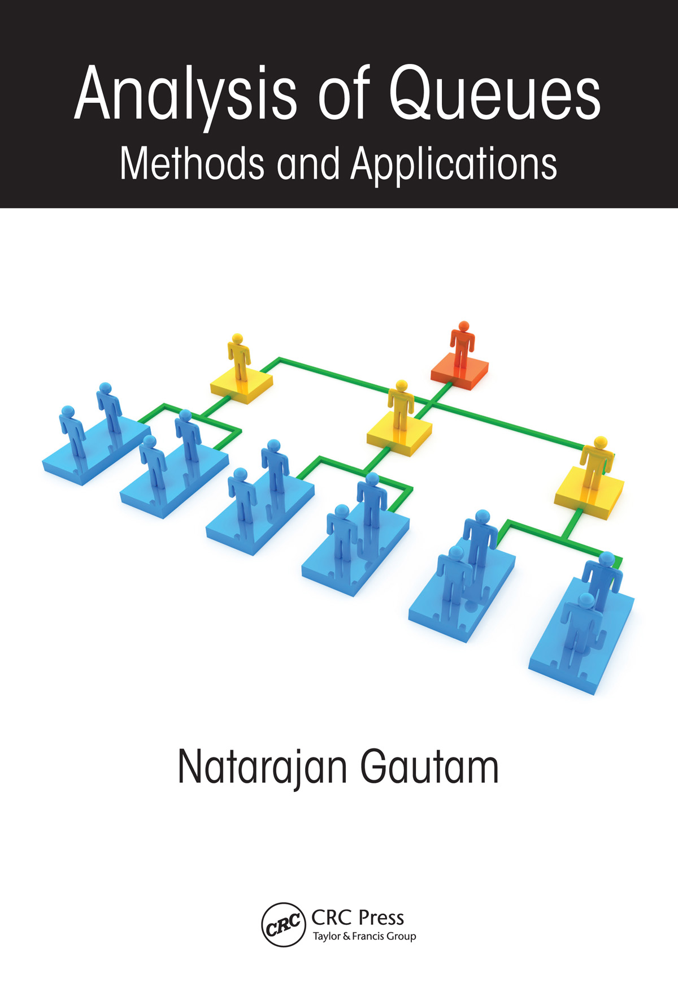

Methods and Applications
Natarajan Gautam
Operations Research Series, CRC Press (Taylor & Francis), 2012. 802 pages.
Written with students and professors in mind, this book combines coverage of classical queueing theory with recent advances in studying stochastic networks. It includes solved problems, exercises, case studies, paradoxes, and numerical examples, covering both standard single-station and single-class discrete queues as well as models for multi-class queues and queueing networks, using methods based on fluid scaling, stochastic fluid flows, continuous-parameter Markov processes, and quasi-birth-and-death processes.
If you find an error in the book, the author would appreciate hearing about it — email ngautam@syr.edu. Errata so far: Chapter 1, Chapter 2, Chapter 4, Chapter 6, Chapter 7, and Chapter 9.